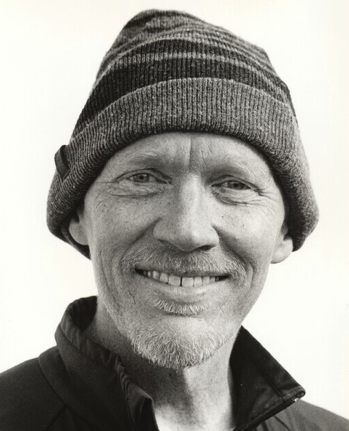

Michael Stanton
Software Engineer
Contact Info
- +49 (0) 151 4454 3634
- ripsawridge@gmail.com
- www.mountainwerks.org
- ripsawridge.github.com
- Wallbergstr. 28, Markt Schwaben, Germany
Skills
C & C++
C#, Java
JavaScript, Python
HTML5 & CSS3
SQL, MySql
Git & GitHub
Linux, Docker, Bash/Shell
References
Available on request